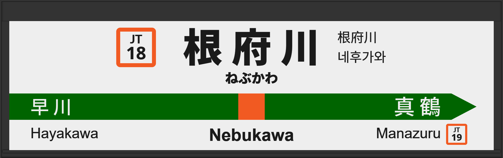

| ←早川 | ■ 東海道線 | 真鶴→ |
|---|
2001年10月に旧型ATOS放送を導入。
2012年12月に常磐改良型に更新。
2014年12月には宇都宮型に更新され、3番線の声優が津田英治氏から田中一永氏に交代。
2016年3月に2・3番線の発車メロディ「Water Crown」が遅テンポバージョンから低音バージョンに変更、4番線の発車メロディ「Gota del Vient」が半音低いバージョンから少し低いバージョンに変更。
2025年3月に2・3番線の発車メロディが「JRE-IKST-021-1」へ、4番線は「JRE-IKST-021-2」に変更。
2026年3月に周辺駅と同時に宇都宮改良型に更新され、接近放送の文面が「黄色い点字ブロックまで～」となる。
| 2 | ■ 東海道線 東京方面 |
2番線次発予告 2番線接近放送 |
旧型でした。 放送は「普通 東京行」です。 |
|---|---|---|---|
| 3 | ■ 東海道線 東京方面 熱海方面 |
3番線次発予告 3番線接近放送 |
旧型でした。 放送は「普通 静岡行」です。 |
| 4 | ■ 東海道線 熱海方面 |
4番線次発予告 4番線接近放送 |
旧型でした。 放送は「普通 沼津行」です。 |